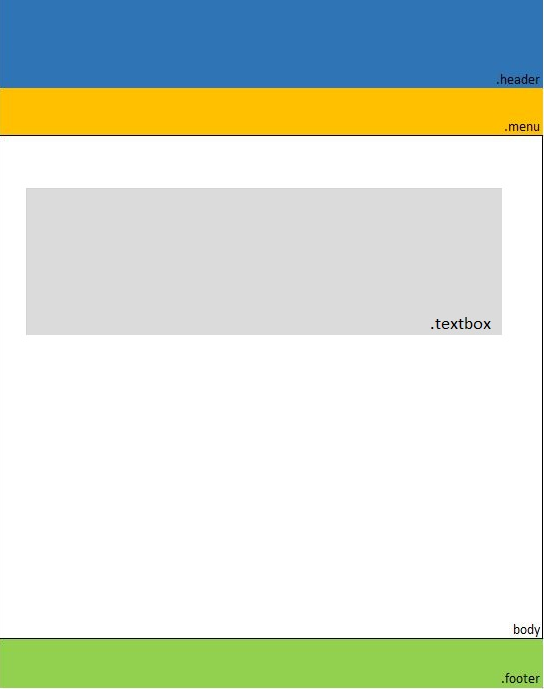
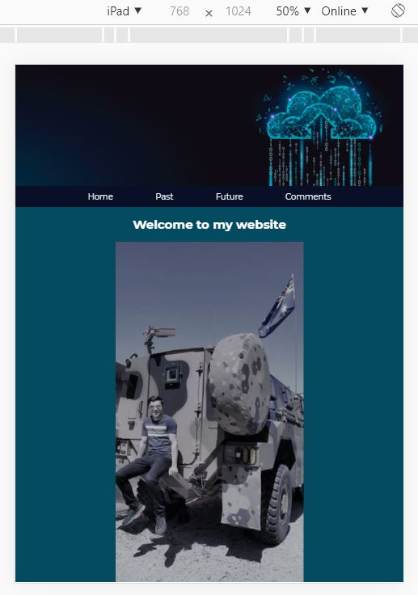

Comments
The structure of my website made of 4 pages:
- A home page (index.html)
- A past page (past.html)
- A future page (future.html)
- A Comment page (comments.html)
| Name | Type | Description |
|---|---|---|
| index.html | HTML file | It is the main page of the website |
| past.html | HTML file | It is the some explanation about my past |
| future.html | HTML file | It is the some explanation about my future |
| websystems.css | CSS file | it is to format the aesthetics of the webpage |
In order to create the website I used some tools such as like HTML (Hyper Markup Language), to describe and present the web pages as well as colors, layouts and fonts.
The diagram below demonstrates the features of the website.
CSS Selectors
| Name | Type | Description |
|---|---|---|
| .header | Class | Used in order to design the top of the website image |
| .picture | Class | It is to design the image on the page |
| .menuicon | Class | It is to design the navigation links on the top pages |
| .content | Class | It is to style the content inside the page |
| .textbox | Class | It is to contain the text on the pages |
| .table | Class | It is to design and style the table in the comments page |
| .footer | Class | It is to design and style the table at the bottom of the pages |
| index.html | HTML file | It is the main page of the website |
| past.html | HTML file | It is the some explanation about my past |
| future.html | HTML file | It is the some explanation about my future |
| websystems.css | CSS file | it is to format the aesthetics of the webpage |
Aesthetics
Based on my website, I aimed to design a website that can be accessed on different internet platforms and used by all the users. I tried the use a minimalistic theme and chose a backround text colour according to the header image in order to maintain the website structure. As it can be seen that it is mostly used a high constrasting colours. The reason why is that I wanted website to allow people who have eye disease such as colorblind, to access easily and use the website. The website that I used for the colour can be found at the link below:
Considering variety of font sizes, the font size has been chosen as Montserrat in whole entire website. The advantages of this font style is that makes the text for the user easier to read. Also, the fonts sizes and Navigator bars are not fixed which means that when you change the size of the screen the fonts sizes and Navigator bars are also changing according to screen size.
Accessibility
The website is compatible with all the electronic devices such as phones and tablets. Also, I aimed to make the text colour pure white so that colourbilind users can use and detect the website easily. Furthermore, the tables that made and the function of resizing feature on the website allow people to scan and read better as well.
 (Responsive of the website in Ipad)